Releasenotes eBlinqx Hypotheekadvies – September 2024
Onderstaande updates hebben wij in de maand september doorgevoerd:
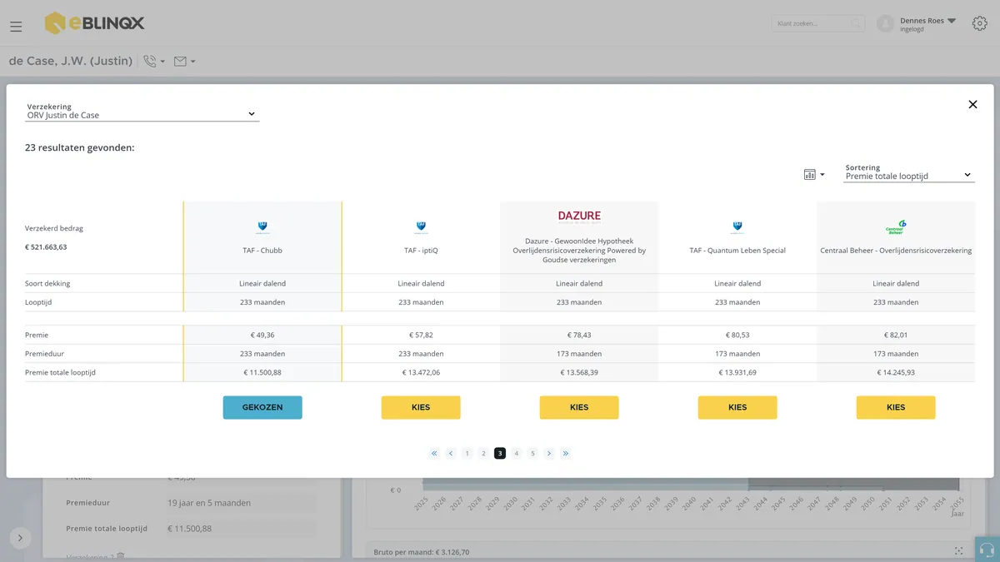
IT-21718: Ingangsdatum verzekeringen
Voor het vergelijken van premies voor overlijdensrisicoverzekeringen en woonlastenbeschermers gebruiken we nu altijd de eerste dag van de nieuwe maand als ingangsdatum van de verzekering. Dit zorgt ervoor dat we een completer aanbod kunnen tonen, omdat sommige aanbieders geen premies lieten zien wanneer de ingangsdatum tijdens de lopende maand lag.
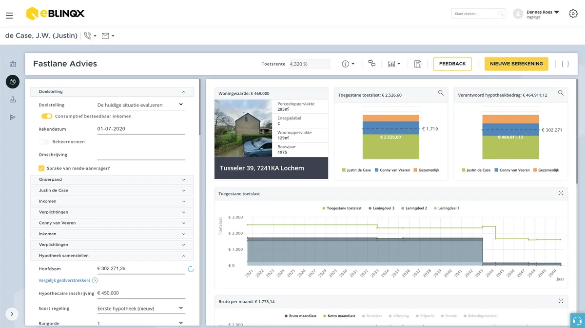
IT-21671: Rekendatum
Je kunt nu berekeningen maken met een ingangsdatum in zowel de toekomst als het verleden. Op basis van deze datum worden automatisch de resterende hoofdsom, looptijd, rentevaste periode, en de periode van renteaftrek berekend. Dit maakt het mogelijk om terug te rekenen tot de oorspronkelijke startdatum van de hypotheek.
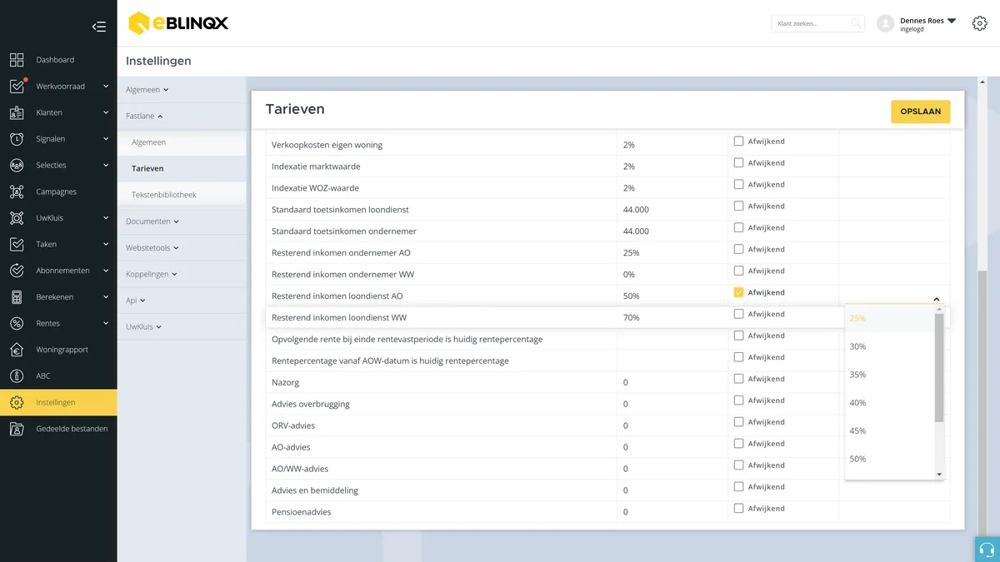
IT-21821: Resterend inkomen bij arbeidsongeschiktheid
Je kunt nu het resterende inkomen bij arbeidsongeschiktheid variëren van 25% tot 65%. Dit percentage kun je standaard instellen voor al je berekeningen. Daarnaast heb je de flexibiliteit om dit per dossier aan te passen.
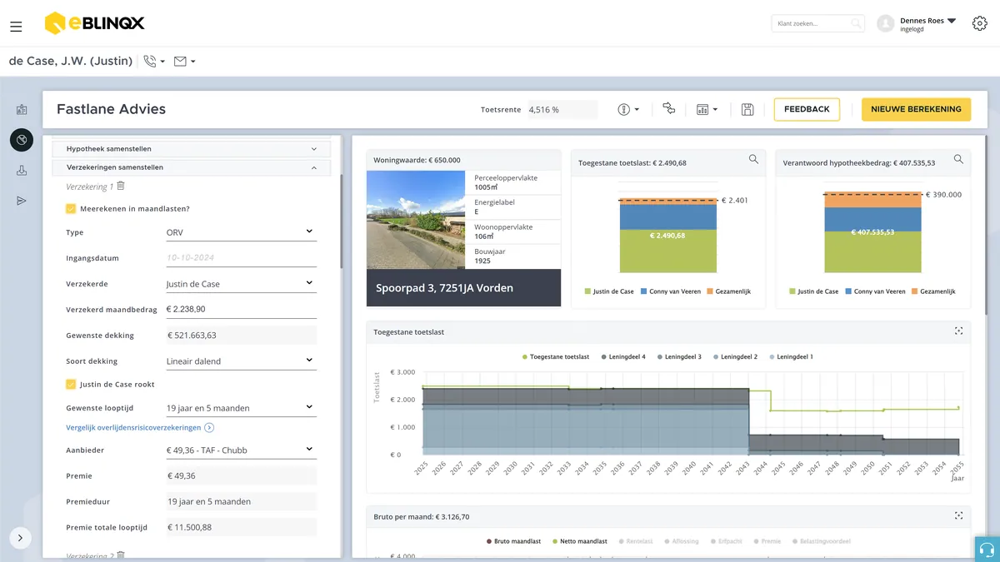
IT-21840: TAF - Chubb
De overlijdensrisicoverzekeringen van TAF-Chubb worden nu gekoppeld aan het LX-aanvraagformulier van HDN.
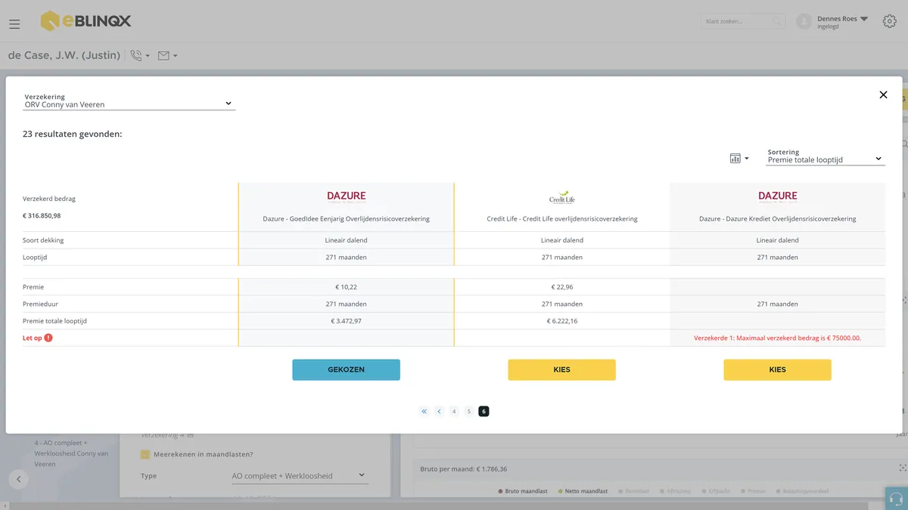
IT-21802: Presentatie producten
Als er op de laatste pagina van het overzicht bij het vergelijken van overlijdensrisicoverzekeringen of woonlastenbeschermers minder dan vijf producten staan, worden de aanwezige producten netjes verdeeld (geschaald) over de pagina.
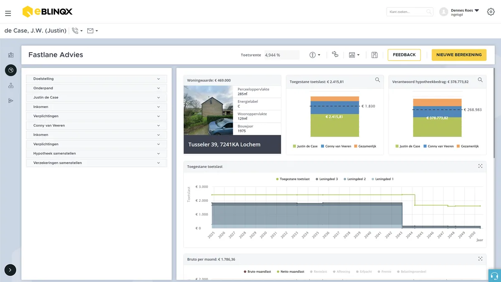
IT-21775: Groter scherm
We hebben nu linksonder op de pagina een knop toegevoegd waarmee je het presentatievlak binnen eBlinqx Hypotheekadvies kunt vergroten. Dit maakt het eenvoudiger en duidelijker om de resultaten van je berekeningen aan je klant te laten zien.
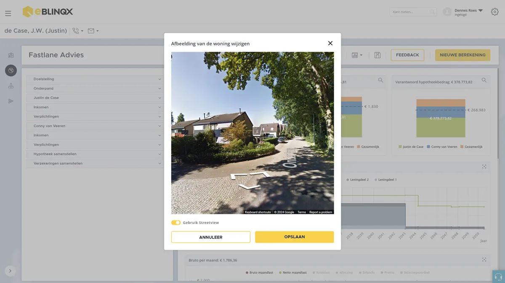
IT-13841: Foto van het onderpand
Het is nu mogelijk om op de getoonde foto van het onderpand in eBlinqx Hypotheekadvies te klikken en een 'andere hoek' van de woning of appartement te kiezen. Ook is het mogelijk om 'door de straat heen te lopen' of een foto van eigen keuze te selecteren.
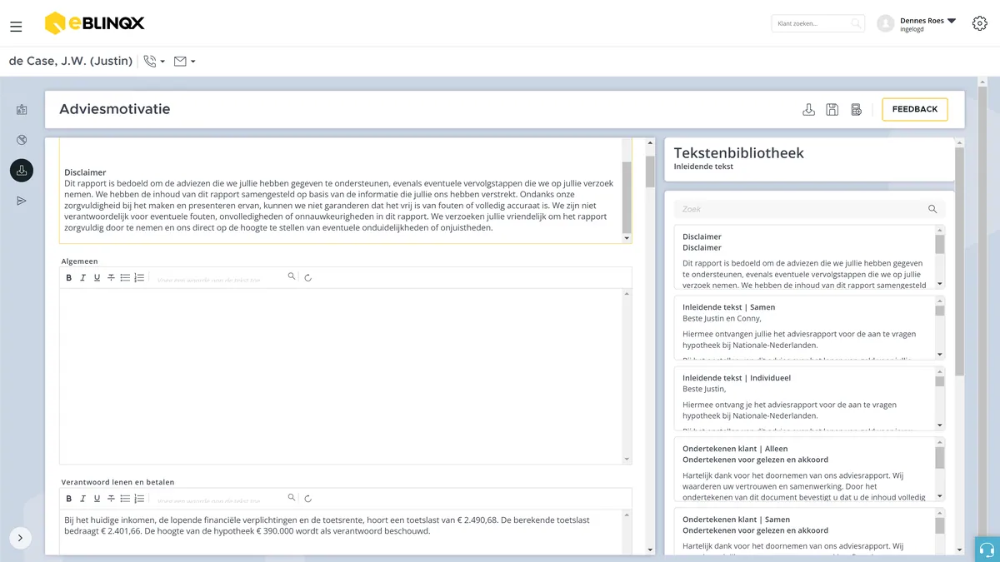
IT-21315: Onderdeel 'Algemeen' in adviesrapport
Voor het onderbouwen van je advies en het samenstellen van het adviesrapport hebben we nu een extra hoofdstuk 'Algemeen' toegevoegd. Hierdoor kun je je klanten informeren over belangrijke onderwerpen die je eerder niet in het adviesrapport kon opnemen, zoals bijvoorbeeld informatie over een samenlevingscontract.
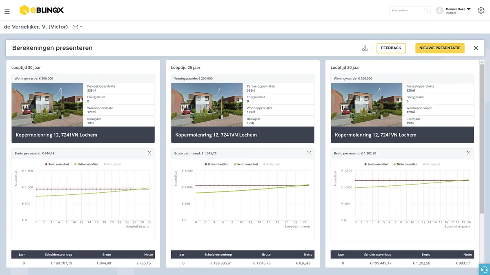
IT-21748: Berekeningen vergelijken
Je kunt nu eenvoudig twee berekeningen met elkaar vergelijken of drie berekeningen naast elkaar presenteren. Hiermee kun je verschillende onderpanden, geldverstrekkers, looptijden, rentevaste periodes, aflosvormen, en meer gemakkelijk vergelijken of overzichtelijk naast elkaar zetten voor je klant.
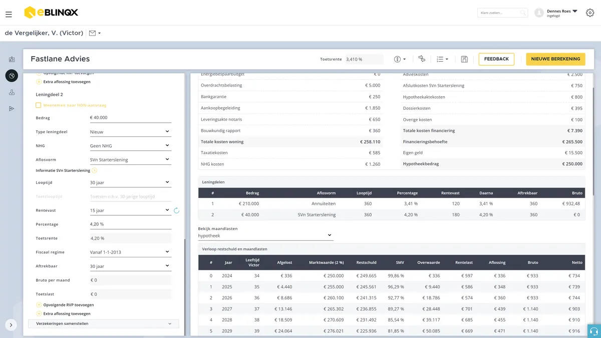
IT-21688: Starterslening in eBlinqx Hypotheekadvies
Het is nu mogelijk om een hypotheekberekening inclusief de SVn-Starterslening aan jouw klant te presenteren.
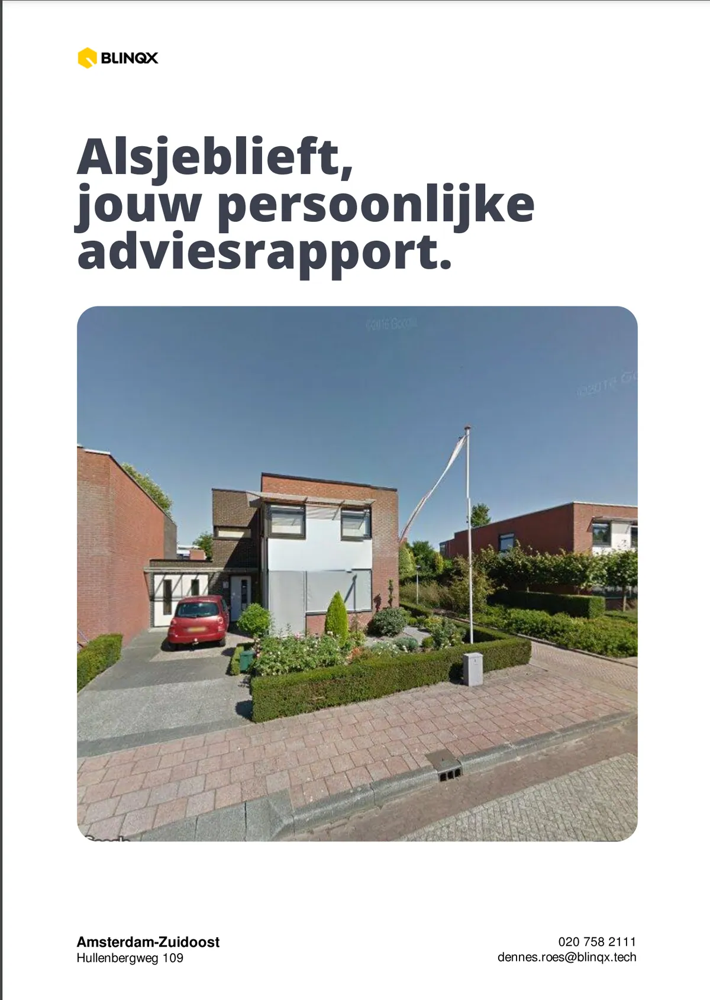
IT-17239: Cover adviesrapport
We hebben de cover van ons adviesrapport aangepast voor een frisse, moderne en professionele uitstraling voor jouw klant.
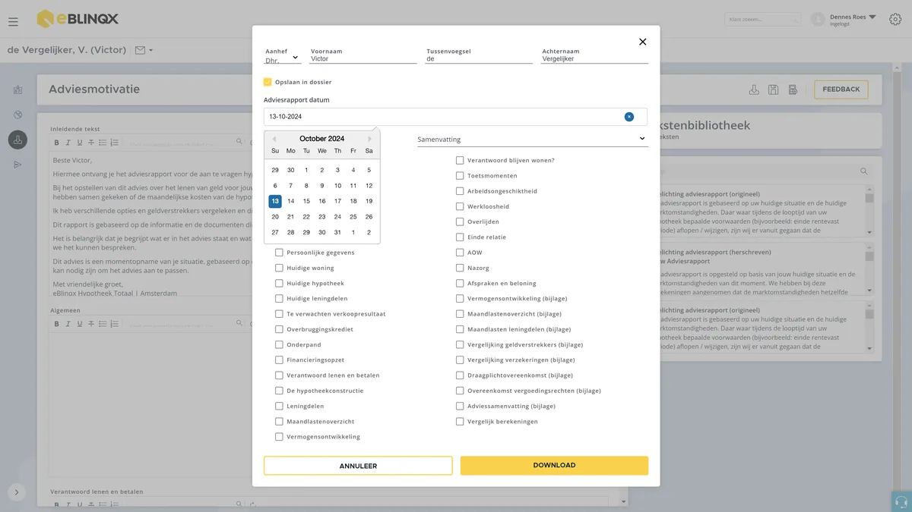
IT-21719: Datum adviesrapport
Vanaf vandaag kun je zelf de datum voor je adviesrapport kiezen. Voorheen stelde het systeem deze datum automatisch in op basis van de rekendatum.
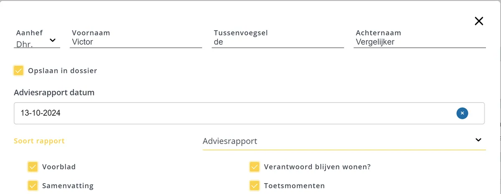
IT-13066: Rapport automatisch opslaan
We hebben het vinkje ‘Rapport opslaan in dossier’ nu standaard aangezet. Dit betekent dat elk rapport automatisch wordt opgeslagen. Als je dit niet wilt, kun je het handmatig uitschakelen op dossierniveau.
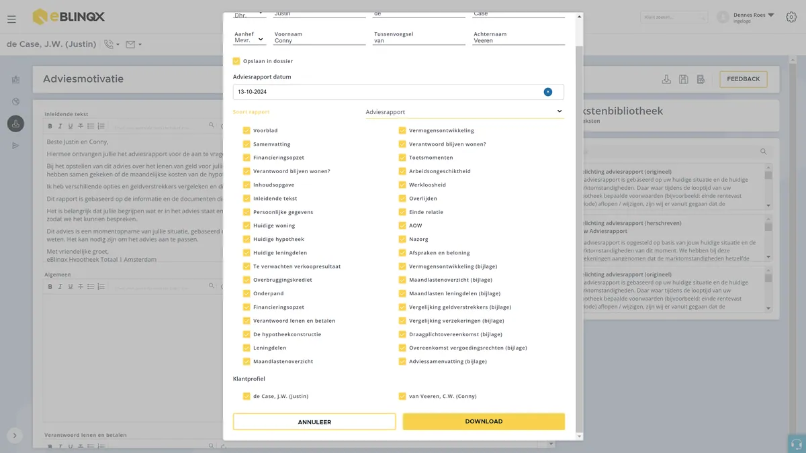
IT-21597: Klantprofiel in adviesrapport
Je kunt nu het klantprofiel integreren in het adviesrapport. De optie om het klantprofiel apart te downloaden blijft hetzelfde.
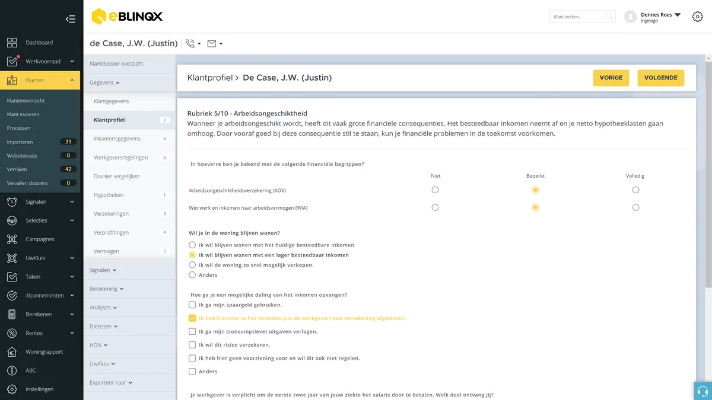
IT-20015: Risicobereidheid in het klantprofiel
De vragen over risicobereidheid met betrekking tot arbeidsongeschiktheid, werkloosheid, het overlijden van een partner, het einde van een relatie en het bereiken van de AOW-datum zijn aangepast. De consument kan nu ook aangeven dat hij of zij wil blijven wonen met een lager besteedbaar inkomen.
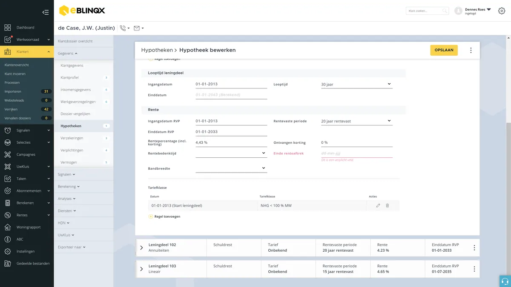
IT-21281: Einddatum renteaftrek
Bij het toevoegen van een bestaand leningdeel hebben we het veld 'Einde renteaftrek' verplicht gemaakt. Het antwoord wordt automatisch ingevuld in het HDN-aanvraagformulier, waar dit ook een verplicht veld is.
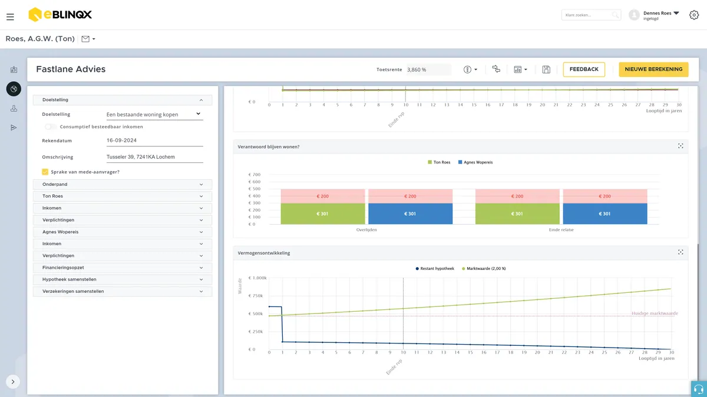
IT-19588: Life-events vanaf de AOW-gerechtigde leeftijd
Bij klanten die de AOW-gerechtigde leeftijd hebben bereikt, wordt het volgende nu niet meer weergegeven:
- Het thema ‘AOW’ in de staafdiagrammen bij 'Verantwoord blijven wonen' in onze applicatie.
- Het thema ‘AOW’ in de verdiepende schermen achter de staafdiagrammen bij 'Verantwoord blijven wonen'.
- Het thema ‘AOW’ bij de acceptatienormen.
- Het thema ‘AOW’ in het adviesrapport bij het onderdeel ‘Verantwoord blijven wonen’.
- Het thema arbeidsongeschiktheid in het adviesrapport.
- Het thema werkloosheid in het adviesrapport.
- Het thema AOW-datum in het adviesrapport.
Deze aanpassingen zijn doorgevoerd omdat het thema AOW niet relevant is voor klanten die al de AOW-gerechtigde leeftijd hebben bereikt, zowel voor samenwonenden als voor alleenstaande klanten.
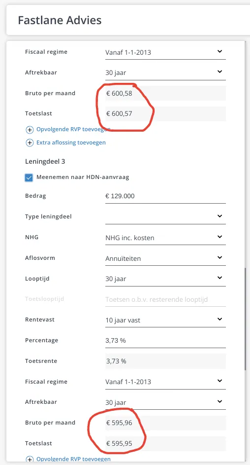
IT-19250: Verschil in toetslast
Het verschil van € 0,01 tussen de berekeningen bruto per maand en de berekende toetslast is gevonden, opgelost en live gezet.
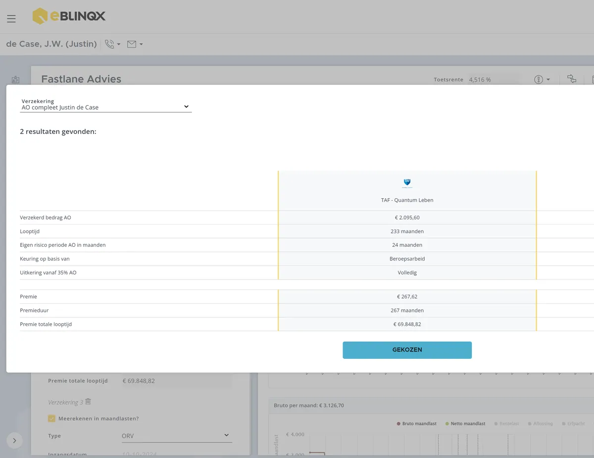
IT-21161: Maandlastenbeschermer voor zelfstandig ondernemers
eBlinqx Hypotheekadvies heeft de TAF Maandlastbeschermer Zelfstandige geïntegreerd. Deze woonlastenverzekering is speciaal ontwikkeld voor zelfstandig ondernemers met een eigen woning. Hiermee is de ondernemer verzekerd van een maandelijkse uitkering om de woonlasten te blijven betalen in geval van arbeidsongeschiktheid.